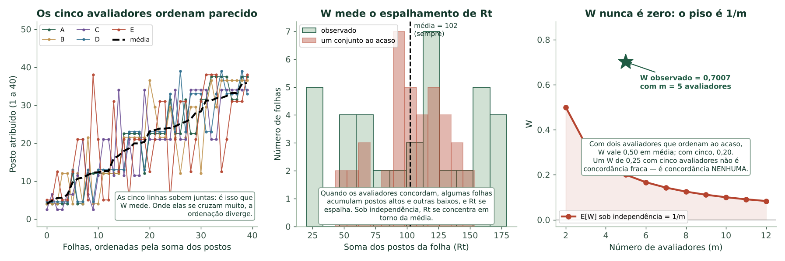
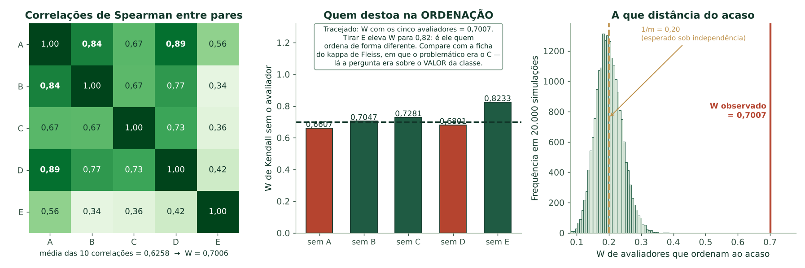

Coeficiente de concordância de Kendall (W)
Mede se m avaliadores ordenam as mesmas unidades da mesma maneira, a partir do espalhamento das somas de postos.
Comece por aqui
Os coeficientes de kappa perguntam se os avaliadores atribuem a mesma classe. O W de Kendall pergunta algo diferente: se eles ordenam as unidades da mesma maneira. É a pergunta certa quando o que interessa é a hierarquia — qual folha está mais atacada, qual candidato é melhor, qual tratamento responde primeiro — e não o rótulo absoluto.
W não varia de 0 a 1 como uma correlação. Sob independência completa, o valor esperado é \(1/m\) — com cinco avaliadores, 0,20. Um W de 0,25 com cinco avaliadores não é "concordância fraca": é concordância praticamente nenhuma. A simulação desta ficha confirma: avaliadores que ordenam ao acaso produzem W com média 0,1996 e percentil 95 de 0,269.
O que é o W de Kendall
Cada avaliador atribui postos de 1 a \(n\) às unidades. Para cada unidade, some os postos recebidos dos \(m\) avaliadores: chame essa soma de \(R_i\). Se todos ordenarem igual, algumas unidades acumularão postos altos e outras baixos, e os \(R_i\) ficarão muito espalhados; se ordenarem ao acaso, os \(R_i\) se concentrarão em torno da média, que é sempre \(m(n+1)/2\). O W é a razão entre o espalhamento observado e o máximo possível.

O W admite três formas equivalentes, e cada uma esclarece um aspecto. Como proporção do espalhamento máximo, ele é a fração da variação possível de \(R_i\) efetivamente alcançada. Como função da correlação de Spearman média entre os pares, \(W=[(m-1)\bar r_s+1]/m\), ele mostra de onde vem o piso de \(1/m\). Como estatística de Friedman reescalonada, \(\chi^2=m(n-1)W\), ele é o tamanho de efeito de um teste que já existia.
Pressupostos e como verificá-los
| Pressuposto | Por que importa | Como verificar |
|---|---|---|
| Escala ao menos ORDINAL | O coeficiente trabalha com postos. | Natureza da variável; com escala nominal, Fleiss. |
| Todos os avaliadores julgam TODAS as unidades | A soma de postos exige delineamento completo. | Conte as avaliações; com dados faltantes, alfa de Krippendorff. |
| Unidades independentes | A distribuição de referência pressupõe isso. | Delineamento. |
| Avaliações independentes entre avaliadores | Avaliadores que se consultam inflam W. | Protocolo. |
| Empates em número moderado | Muitos empates exigem a correção, e a inflacionam. | Conte os empates; com escala de poucas classes, há muitos. |
| n maior que 7 para a aproximação qui-quadrado | Com n pequeno ela é grosseira. | Use permutação; a ficha mostra a diferença. |
| Interesse na ordem, não no valor | W ignora deslocamentos constantes. | Se o valor importa, use o ICC ou o kappa ponderado. |
Com uma escala de apenas cinco classes e 40 folhas, há empates em toda parte. Nos dados desta ficha, \(T=17\,028\), e o W sem correção vale 0,6634 contra 0,7007 com correção — uma diferença de 0,037, que não é desprezível. Implementações que ignoram a correção subestimam a concordância sistematicamente quando a escala é grosseira.
Formulação e cálculo
Em que:
- \(n,\ m\)
- número de unidades e de avaliadores
- \(r_{ij}\)
- posto dado pelo avaliador \(j\) à unidade \(i\)
- \(R_i\)
- soma dos postos da unidade \(i\)
- \(S\)
- soma dos desvios quadráticos de \(R_i\)
- \(T\)
- correção para empates; \(t_{gj}\) é o tamanho do \(g\)-ésimo grupo de empates do avaliador \(j\)
As três identidades
Exemplo numérico, passo a passo
| Folha | Classes dadas | Postos dos cinco avaliadores | Rᵢ |
|---|---|---|---|
| 1 | 3, 3, 4, 3, 4 | 22,5 · 21,5 · 21,0 · 23,0 · 31,0 | 119,0 |
| 2 | 5, 4, 4, 4, 5 | 37,5 · 29,5 · 21,0 · 33,0 · 38,0 | 159,0 |
| 3 | 4, 4, 5, 3, 5 | 31,5 · 29,5 · 34,0 · 23,0 · 38,0 | 156,0 |
| 4 | 5, 5, 5, 4, 5 | 37,5 · 36,5 · 34,0 · 33,0 · 38,0 | 179,0 |
| 5 | 5, 5, 5, 4, 3 | 37,5 · 36,5 · 34,0 · 33,0 · 21,0 | 162,0 |
| 6 | 1, 2, 2, 1, 1 | 4,0 · 12,0 · 6,5 · 4,5 · 5,0 | 32,0 |
| 7 | 2, 2, 3, 2, 4 | 12,0 · 12,0 · 11,5 · 13,0 · 31,0 | 79,5 |
| 8 | 1, 2, 1, 1, 1 | 4,0 · 12,0 · 2,5 · 4,5 · 5,0 | 28,0 |
| 9 | 3, 3, 4, 3, 4 | 22,5 · 21,5 · 21,0 · 23,0 · 31,0 | 119,0 |
| 10 | 3, 4, 5, 4, 2 | 22,5 · 29,5 · 34,0 · 33,0 · 12,5 | 131,5 |
| 11 | 4, 3, 4, 3, 4 | 31,5 · 21,5 · 21,0 · 23,0 · 31,0 | 128,0 |
| 12 | 3, 4, 4, 3, 3 | 22,5 · 29,5 · 21,0 · 23,0 · 21,0 | 117,0 |
A média das somas de postos é \(\bar R=m(n+1)/2=5\times41/2=102{,}5\), como tem de ser. A folha 4, em que todos deram classe alta, tem \(R=179{,}0\); a folha 8, em que todos deram classe baixa, tem \(R=28{,}0\). É esse espalhamento que o coeficiente mede.
Verificação pela segunda identidade: a média das dez correlações de Spearman pareadas é \(\bar r_s=0{,}6258\), e
que é o mesmo valor até a quarta casa. Verificação pela terceira: \(\chi^2=5\times39\times0{,}7007=136{,}63\) com 39 graus de liberdade e \(p=9{,}1\times10^{-13}\) — exatamente o que friedman.test() devolve.
Propriedades
- Sob independência, \(\mathbb{E}[W]=1/m\), e não 0. O coeficiente nunca é negativo.
- \(W=1\) na concordância perfeita; \(W=0\) exigiria que todas as somas de postos fossem iguais, um arranjo muito improvável.
- É invariante a transformações monótonas dos valores: só a ordem importa.
- Não detecta viés constante: somar uma classe a tudo o que um avaliador fez não altera W.
- É exatamente a estatística de Friedman dividida por \(m(n-1)\): o mesmo teste, em escala de efeito.
- Relaciona-se de forma exata à correlação de Spearman média entre os pares.
- Com \(m=2\), \(W=(1+r_s)/2\), de modo que \(r_s=0\) dá \(W=0{,}5\).
Como interpretar os resultados
| Elemento | O que informa | Cuidado |
|---|---|---|
| value | A estimativa de W. | Compare com 1/m, não com 0. |
| Correção para empates | Se foi aplicada. | Sem ela, W é subestimado. |
| χ² e valor-p | Teste de independência das ordenações. | Com n ≤ 7, use permutação. |
| Spearman médio | A leitura em escala de correlação. | r̄ = (mW − 1)/(m − 1). |
| Deixa-um-de-fora | Quem ordena de forma diferente. | É o diagnóstico acionável. |
| Perfis de postos | Onde as ordenações divergem. | O gráfico mostra o que o número resume. |
Nos dados desta ficha, a análise deixa-um-de-fora do kappa de Fleiss aponta o avaliador C como o mais problemático, e a do W aponta o E. Não é contradição: são defeitos diferentes. O C tem viés de severidade — classifica em média uma classe acima — mas ordena as folhas corretamente, e por isso prejudica o kappa e não o W. O E ordena de forma errática sem ser sistematicamente severo, e por isso prejudica o W. Usar os dois coeficientes juntos é o que permite distinguir os dois problemas, e cada um exige uma intervenção diferente no treinamento.
Como executar no R e em Python
Onde executar o código em Python
Não é preciso instalar nada: o Google Colab é um computador na nuvem, gratuito, que executa Python pelo navegador e já traz as bibliotecas usadas aqui (numpy, scipy e matplotlib).
A função é irr::kendall(), com correct = TRUE para a correção de empates — que deve ser o padrão sempre que a escala tiver poucas classes. DescTools::KendallW() oferece o teste e intervalo. A verificação pelo teste de Friedman é recomendável, mas exige atenção aos papéis: em friedman.test(), as colunas são os tratamentos e as linhas os blocos, de modo que a matriz precisa ser transposta.
library(irr)
kendall(sev, correct = TRUE) # W com correção para empates
friedman.test(t(sev)) # o mesmo teste: chi2 = m(n-1)W
Exemplo de aplicação
Contexto dos dados
Os dados são fictícios e foram criados pelo autor: 40 folhas de cafeeiro avaliadas quanto à severidade de ferrugem por cinco avaliadores (A a E), em escala ordinal de 1 (ausente) a 5 (muito alta). O mesmo conjunto atravessa as seis fichas de concordância, o que permite ver como cada coeficiente responde à mesma estrutura de desacordo. Dois dos avaliadores foram construídos com defeitos distintos: o C classifica sistematicamente cerca de uma classe acima dos demais, e o E é o mais errático sem ser o mais severo. Esta ficha trata a escala como ordinal e pergunta apenas se os avaliadores põem as folhas na mesma ordem.
Código em R
# Coeficiente de concordância de Kendall (W): exemplo completo ----
# Pacotes: irr (kendall), DescTools (KendallW), vegan
# install.packages(c("irr", "DescTools"))
# Os mesmos dados das demais fichas de concordância.
sev <- matrix(c(
3,3,4,3,4, 5,4,4,4,5, 4,4,5,3,5, 5,5,5,4,5, 5,5,5,4,3,
1,2,2,1,1, 2,2,3,2,4, 1,2,1,1,1, 3,3,4,3,4, 3,4,5,4,2,
4,3,4,3,4, 3,4,4,3,3, 1,1,1,1,1, 3,3,5,3,3, 2,3,2,2,1,
5,5,5,5,4, 5,5,4,3,5, 4,5,5,4,4, 2,2,5,2,2, 3,4,5,4,3,
4,4,4,4,1, 1,2,3,1,3, 3,3,3,3,3, 2,3,5,2,3, 2,1,2,2,2,
2,1,3,2,3, 3,3,4,3,1, 2,1,1,1,5, 3,2,4,5,4, 1,1,1,1,2,
4,5,5,4,4, 2,2,4,2,1, 1,1,4,1,3, 1,1,2,1,1, 3,3,3,2,3,
3,3,3,3,3, 3,5,4,3,2, 2,2,4,2,1, 4,2,5,4,4, 5,5,5,5,2),
ncol = 5, byrow = TRUE,
dimnames = list(NULL, c("A","B","C","D","E")))
library(irr)
kendall(sev, correct = TRUE) # W com correção para empates
kendall(sev, correct = FALSE) # sem correção
library(DescTools)
KendallW(sev, correct = TRUE, test = TRUE)
KendallW(sev, correct = TRUE, test = TRUE, conf.level = 0.95)
# A conta à mão
n <- nrow(sev); m <- ncol(sev)
R <- apply(sev, 2, rank) # postos DENTRO de cada avaliador
Rt <- rowSums(R) # soma dos postos de cada folha
mean(Rt) # é sempre m(n+1)/2
S <- sum((Rt - mean(Rt))^2); S
TT <- sum(apply(R, 2, function(r) {
t <- table(r); sum(t^3 - t) })) # correção para empates
TT
12*S/(m^2*(n^3 - n) - m*TT)
# As três leituras equivalentes de W
# (a) proporção da variação máxima de Rt
Smax <- (m^2*(n^3 - n) - m*TT)/12
S/Smax
# (b) função da correlação de Spearman média
pares <- combn(m, 2)
rs <- apply(pares, 2, function(p) cor(sev[, p[1]], sev[, p[2]], method = "spearman"))
rbar <- mean(rs); rbar
((m - 1)*rbar + 1)/m # é exatamente W
# (c) relação com o teste de Friedman
W <- 12*S/(m^2*(n^3 - n) - m*TT)
m*(n - 1)*W # a estatística de Friedman
friedman.test(t(sev)) # os mesmos números
pchisq(m*(n-1)*W, df = n - 1, lower.tail = FALSE)
# ATENÇÃO aos papéis: em friedman.test(), as COLUNAS são os tratamentos
# e as LINHAS os blocos. Para o W de Kendall das folhas, as folhas fazem
# o papel de tratamentos e os avaliadores o de blocos: por isso t(sev).
# O que W NÃO mede: deslocamentos constantes
sev2 <- sev; sev2[, "C"] <- pmin(sev2[, "C"] + 1, 6)
kendall(sev2)$value # praticamente igual
# E o que ele mede: inversões de ordem
sev3 <- sev; sev3[, "C"] <- 6 - sev3[, "C"]
kendall(sev3)$value # cai muito
# Quem destoa na ordenação
sapply(1:m, function(j) kendall(sev[, -j])$value)
# Valor-p por permutação, indispensável com n pequeno
set.seed(4)
permuta <- function(X, B = 10000) {
Wobs <- kendall(X)$value
mean(replicate(B, kendall(apply(X, 2, sample))$value) >= Wobs)
}
permuta(sev[1:6, ]) # com 6 folhas, a aproximação falha
# Gráficos
matplot(apply(sev, 2, rank)[order(rowSums(apply(sev, 2, rank))), ],
type = "l", lty = 1, col = 1:5, xlab = "Folhas (ordenadas)",
ylab = "Posto atribuído")
legend("topleft", colnames(sev), col = 1:5, lty = 1, bty = "n")
A mesma análise em Python, com os resultados
Cole o código em um notebook do Google Colab ↗ e execute com Shift+Enter. Os valores abaixo são a saída desse código.
# Bibliotecas: numpy e scipy (ambas já instaladas no Google Colab)
import numpy as np
from scipy import stats
# ===================================================================
# Dados fictícios, criados pelo autor, compartilhados pelas fichas de
# concordância: 40 folhas de cafeeiro avaliadas quanto à severidade de
# ferrugem por cinco avaliadores, em escala de 1 (ausente) a 5 (muito alta).
# ===================================================================
SEV = np.array([
[3,3,4,3,4],[5,4,4,4,5],[4,4,5,3,5],[5,5,5,4,5],[5,5,5,4,3],
[1,2,2,1,1],[2,2,3,2,4],[1,2,1,1,1],[3,3,4,3,4],[3,4,5,4,2],
[4,3,4,3,4],[3,4,4,3,3],[1,1,1,1,1],[3,3,5,3,3],[2,3,2,2,1],
[5,5,5,5,4],[5,5,4,3,5],[4,5,5,4,4],[2,2,5,2,2],[3,4,5,4,3],
[4,4,4,4,1],[1,2,3,1,3],[3,3,3,3,3],[2,3,5,2,3],[2,1,2,2,2],
[2,1,3,2,3],[3,3,4,3,1],[2,1,1,1,5],[3,2,4,5,4],[1,1,1,1,2],
[4,5,5,4,4],[2,2,4,2,1],[1,1,4,1,3],[1,1,2,1,1],[3,3,3,2,3],
[3,3,3,3,3],[3,5,4,3,2],[2,2,4,2,1],[4,2,5,4,4],[5,5,5,5,2]])
AVAL = ["A", "B", "C", "D", "E"]
from collections import Counter
def postos(v):
"""Postos médios, com empates resolvidos pela média."""
return stats.rankdata(v)
def kendall_w(X, corrigir=True):
"""W de Kendall. X: n unidades (linhas) x m avaliadores (colunas)."""
X = np.asarray(X, float); n, m = X.shape
R = np.array([postos(X[:, j]) for j in range(m)]) # m x n
Rt = R.sum(axis=0) # soma por unidade
S = ((Rt - Rt.mean())**2).sum()
if corrigir:
T = sum(sum(t**3 - t for t in Counter(R[j]).values()) for j in range(m))
else:
T = 0.0
W = 12*S/(m**2*(n**3 - n) - m*T)
return W, S, T, R, Rt
n, m = SEV.shape
print(f"{n} folhas, {m} avaliadores, severidade ordinal de 1 a 5")
print("O W de Kendall pergunta se os avaliadores ORDENAM as folhas da mesma")
print("maneira, e não se atribuem a mesma classe: é a pergunta certa quando o")
print("que interessa é a hierarquia, e não o rótulo.")
W, S, T, R, Rt = kendall_w(SEV)
print(f"\nSoma dos postos por folha (Rt), primeiras doze folhas")
print(f"{'folha':>6}{'classificações':>22}{'postos dos 5 avaliadores':>36}{'Rt':>9}")
for i in range(12):
print(f"{i+1:>6}{str(SEV[i].tolist()):>22}"
f"{' '.join(f'{R[j,i]:5.1f}' for j in range(m)):>36}{Rt[i]:>9.1f}")
print("...")
print(f"\nMédia de Rt = {Rt.mean():.2f} (é sempre m(n+1)/2 = "
f"{m*(n+1)/2:.2f})")
print(f"S = soma dos desvios quadráticos de Rt = {S:.2f}")
print(f"Correção para empates: T = {T:.0f}")
print(f"\nW = 12 S / [m²(n³ − n) − m T]")
print(f"W = 12 x {S:.2f} / [{m}² x ({n}³ − {n}) − {m} x {T:.0f}] = {W:.4f}")
Wsc = kendall_w(SEV, corrigir=False)[0]
print(f"Sem a correção para empates, W = {Wsc:.4f} - a correção importa aqui,")
print(f"porque com só cinco classes e {n} folhas há muitos empates.")
# ===================================================================
# PARTE 1 - as três leituras equivalentes de W
# ===================================================================
print("\n" + "=" * 70)
print("W tem três leituras, todas iguais em valor")
print("\n(a) Proporção da variação máxima possível de Rt")
Smax = (m**2*(n**3-n) - m*T)/12
print(f" S observado = {S:.2f} | S máximo possível = {Smax:.2f}")
print(f" razão = {S/Smax:.4f} = W")
print(" W = 1 significa concordância perfeita: todos ordenam igual.")
print(" W = 0 exigiria que as somas de postos fossem todas iguais, o que é")
print(" um arranjo MUITO improvável, e não o resultado do acaso: sob")
print(" independência W vale 1/m em média, como a parte 3 mostra.")
print("\n(b) Função da correlação de Spearman média entre os pares")
rs = []
for i in range(m):
for j in range(i+1, m):
rs.append(stats.spearmanr(SEV[:,i], SEV[:,j]).statistic)
rs = np.array(rs)
print(f" {len(rs)} correlações de Spearman pareadas:")
print(" " + " ".join(f"{v:.3f}" for v in rs))
rbar = rs.mean()
print(f" média = {rbar:.4f}")
print(f" W previsto = [(m − 1)·rbar + 1]/m = [{m-1}x{rbar:.4f} + 1]/{m} = "
f"{((m-1)*rbar+1)/m:.4f}")
print(f" W calculado = {W:.4f}")
print(" A relação r = (mW − 1)/(m − 1) é uma identidade algébrica, e vale")
print(" também com empates, desde que W use a correção e as correlações")
print(" sejam de Spearman com postos médios.")
print(f" A identidade é exata até a quarta casa. Note o que ela implica:")
print(f" com m = {m}, mesmo rbar = 0 daria W = 1/m = {1/m:.4f}.")
print(" W NUNCA é negativo - e por isso 'W = 0,2' não quer dizer o mesmo")
print(" que 'correlação de 0,2'.")
print("\n(c) Relação exata com o teste de Friedman")
chi2_fried = m*(n-1)*W
p_fried = stats.chi2.sf(chi2_fried, n-1)
print(f" qui² de Friedman = m(n − 1)W = {m} x {n-1} x {W:.4f} = "
f"{chi2_fried:.4f}")
print(f" gl = n − 1 = {n-1} | p = {p_fried:.4e}")
amostra = SEV.T
chi2_direto = stats.friedmanchisquare(*[amostra[:, i] for i in range(n)]).statistic
p_direto = stats.friedmanchisquare(*[amostra[:, i] for i in range(n)]).pvalue
print(f" scipy.stats.friedmanchisquare devolve {chi2_direto:.4f} "
f"com p = {p_direto:.4e}")
print(" São o MESMO teste: W é a estatística de Friedman reescalonada para")
print(" o intervalo [0, 1]. Friedman dá o valor-p; W dá o tamanho do efeito.")
print(" ATENÇÃO aos papéis: no Friedman da ficha correspondente, os")
print(" tratamentos são as colunas e os blocos as linhas. Aqui é o")
print(" contrário - as FOLHAS fazem o papel de 'tratamentos' e os")
print(" AVALIADORES o de blocos, porque a pergunta é se as folhas são")
print(" ordenadas de modo consistente.")
# ===================================================================
# PARTE 2 - o que W não diz
# ===================================================================
print("\n" + "=" * 70)
print("W mede concordância de ORDEM, não de VALOR.")
print("\nDemonstração: somando 1 classe a tudo o que o avaliador C fez")
S2 = SEV.copy(); S2[:,2] = np.clip(S2[:,2] + 1, 1, 6)
W2 = kendall_w(S2)[0]
print(f" W original = {W:.4f} | W com +1 em C = {W2:.4f}")
print(" Quase não muda: somar uma constante não altera a ordenação.")
print(" Se o que interessa é o VALOR atribuído, e não a ordem, W é a")
print(" ferramenta errada - use o ICC ou o kappa ponderado.")
print("\nDemonstração oposta: INVERTENDO a ordenação do avaliador C")
S3 = SEV.copy(); S3[:,2] = 6 - S3[:,2]
W3 = kendall_w(S3)[0]
print(f" W com C invertido = {W3:.4f}")
print(f" A queda é grande ({W:.4f} para {W3:.4f}), mas W continua bem acima")
print(" de zero, porque os outros quatro avaliadores seguem concordando")
print(" entre si. W é um índice GLOBAL: ele não aponta o dissidente.")
print("\nPara localizar o dissidente, retire um avaliador de cada vez:")
print(f"{'sem o avaliador':>18}{'W':>10}{'variação':>12}")
for j in range(m):
resto = [c for c in range(m) if c != j]
Wj = kendall_w(SEV[:, resto])[0]
print(f"{AVAL[j]:>18}{Wj:>10.4f}{Wj-W:>+12.4f}")
print("Tirar E é o que mais eleva W: ele é o avaliador cuja ORDENAÇÃO mais")
print("destoa. Compare com a ficha do kappa de Fleiss, em que o avaliador C")
print("era o mais problemático - lá a pergunta era sobre o VALOR da classe,")
print("e C tem viés de severidade sem errar a ordem.")
# ===================================================================
# PARTE 3 - distribuição de W sob independência
# ===================================================================
print("\n" + "=" * 70)
print("O que W vale quando não há concordância nenhuma?")
print("Simulação: 20.000 conjuntos em que cada avaliador ordena as 40 folhas")
print("ao acaso, usando as mesmas marginais dos avaliadores reais.")
rng = np.random.default_rng(13)
marg = [np.bincount(SEV[:,j], minlength=6)[1:]/n for j in range(m)]
sim = []
for _ in range(20000):
Z = np.column_stack([rng.choice(5, n, p=marg[j])+1 for j in range(m)])
sim.append(kendall_w(Z)[0])
sim = np.array(sim)
print(f"\n média = {sim.mean():.4f} (o valor esperado é 1/m = {1/m:.4f})")
print(f" desvio-padrão = {sim.std(ddof=1):.4f}")
print(f" percentil 95 = {np.percentile(sim, 95):.4f}")
print(f" W observado = {W:.4f}, muito acima de qualquer valor simulado")
print(f" (maior W simulado = {sim.max():.4f})")
print("\nO valor esperado de W sob independência é 1/m, e não 0: com cinco")
print(f"avaliadores, {1/m:.2f}. Um W de 0,25 com cinco avaliadores não é")
print("concordância fraca - é concordância NENHUMA. Esse é o erro de leitura")
print("mais comum do coeficiente.")
print(f"\nValor esperado de W sob independência, por número de avaliadores:")
print(" " + " ".join(f"m = {mm}: {1/mm:.3f}" for mm in [2, 3, 5, 10, 20]))
# ===================================================================
# PARTE 4 - W com poucas unidades e o teste exato
# ===================================================================
print("\n" + "=" * 70)
print("Com n pequeno, a aproximação qui-quadrado falha e é preciso permutar.")
print("Permutação: embaralham-se os postos DENTRO de cada avaliador, que é o")
print("que a hipótese nula autoriza.")
def p_permuta(X, B=20000, semente=4):
Wobs = kendall_w(X)[0]; nn, mm = X.shape
rng = np.random.default_rng(semente); c = 0
for _ in range(B):
Z = np.column_stack([rng.permutation(X[:, j]) for j in range(mm)])
if kendall_w(Z)[0] >= Wobs: c += 1
return (c+1)/(B+1)
print(f"\n{'subconjunto':<22}{'n':>4}{'W':>9}{'p qui-quadrado':>18}"
f"{'p permutação':>16}")
for rot, idx in [("todas as folhas", np.arange(40)),
("12 primeiras", np.arange(12)),
("6 primeiras", np.arange(6))]:
Xs = SEV[idx]; Ws = kendall_w(Xs)[0]; ns = len(idx)
pq = stats.chi2.sf(m*(ns-1)*Ws, ns-1)
print(f"{rot:<22}{ns:>4}{Ws:>9.4f}{pq:>18.3e}{p_permuta(Xs):>16.5f}")
print("\nO valor-p por permutação não pode descer abaixo de 1/(B + 1) = 5e-05,")
print("que é o piso de 20.000 reamostragens: com 40 e com 12 folhas, os dois")
print("métodos apenas concordam em que a evidência é esmagadora. Com 6 folhas,")
print("porém, a aproximação qui-quadrado devolve 2,2e-03 e a permutação 2,5e-04,")
print("quase dez vezes menor - a aproximação é grosseira ali. A recomendação")
print("clássica é usá-la apenas com n maior que 7; abaixo disso, tabelas exatas")
print("ou permutação.")
Resultados da execução
40 folhas, 5 avaliadores, severidade ordinal de 1 a 5
O W de Kendall pergunta se os avaliadores ORDENAM as folhas da mesma
maneira, e não se atribuem a mesma classe: é a pergunta certa quando o
que interessa é a hierarquia, e não o rótulo.
Soma dos postos por folha (Rt), primeiras doze folhas
folha classificações postos dos 5 avaliadores Rt
1 [3, 3, 4, 3, 4] 22.5 21.5 21.0 23.0 31.0 119.0
2 [5, 4, 4, 4, 5] 37.5 29.5 21.0 33.0 38.0 159.0
3 [4, 4, 5, 3, 5] 31.5 29.5 34.0 23.0 38.0 156.0
4 [5, 5, 5, 4, 5] 37.5 36.5 34.0 33.0 38.0 179.0
5 [5, 5, 5, 4, 3] 37.5 36.5 34.0 33.0 21.0 162.0
6 [1, 2, 2, 1, 1] 4.0 12.0 6.5 4.5 5.0 32.0
7 [2, 2, 3, 2, 4] 12.0 12.0 11.5 13.0 31.0 79.5
8 [1, 2, 1, 1, 1] 4.0 12.0 2.5 4.5 5.0 28.0
9 [3, 3, 4, 3, 4] 22.5 21.5 21.0 23.0 31.0 119.0
10 [3, 4, 5, 4, 2] 22.5 29.5 34.0 33.0 12.5 131.5
11 [4, 3, 4, 3, 4] 31.5 21.5 21.0 23.0 31.0 128.0
12 [3, 4, 4, 3, 3] 22.5 29.5 21.0 23.0 21.0 117.0
...
Média de Rt = 102.50 (é sempre m(n+1)/2 = 102.50)
S = soma dos desvios quadráticos de Rt = 88391.50
Correção para empates: T = 17028
W = 12 S / [m²(n³ − n) − m T]
W = 12 x 88391.50 / [5² x (40³ − 40) − 5 x 17028] = 0.7007
Sem a correção para empates, W = 0.6634 - a correção importa aqui,
porque com só cinco classes e 40 folhas há muitos empates.
======================================================================
W tem três leituras, todas iguais em valor
(a) Proporção da variação máxima possível de Rt
S observado = 88391.50 | S máximo possível = 126155.00
razão = 0.7007 = W
W = 1 significa concordância perfeita: todos ordenam igual.
W = 0 exigiria que as somas de postos fossem todas iguais, o que é
um arranjo MUITO improvável, e não o resultado do acaso: sob
independência W vale 1/m em média, como a parte 3 mostra.
(b) Função da correlação de Spearman média entre os pares
10 correlações de Spearman pareadas:
0.839 0.674 0.893 0.564 0.668 0.774 0.339 0.735 0.356 0.416
média = 0.6258
W previsto = [(m − 1)·rbar + 1]/m = [4x0.6258 + 1]/5 = 0.7006
W calculado = 0.7007
A relação r = (mW − 1)/(m − 1) é uma identidade algébrica, e vale
também com empates, desde que W use a correção e as correlações
sejam de Spearman com postos médios.
A identidade é exata até a quarta casa. Note o que ela implica:
com m = 5, mesmo rbar = 0 daria W = 1/m = 0.2000.
W NUNCA é negativo - e por isso 'W = 0,2' não quer dizer o mesmo
que 'correlação de 0,2'.
(c) Relação exata com o teste de Friedman
qui² de Friedman = m(n − 1)W = 5 x 39 x 0.7007 = 136.6283
gl = n − 1 = 39 | p = 9.1458e-13
scipy.stats.friedmanchisquare devolve 136.6283 com p = 9.1458e-13
São o MESMO teste: W é a estatística de Friedman reescalonada para
o intervalo [0, 1]. Friedman dá o valor-p; W dá o tamanho do efeito.
ATENÇÃO aos papéis: no Friedman da ficha correspondente, os
tratamentos são as colunas e os blocos as linhas. Aqui é o
contrário - as FOLHAS fazem o papel de 'tratamentos' e os
AVALIADORES o de blocos, porque a pergunta é se as folhas são
ordenadas de modo consistente.
======================================================================
W mede concordância de ORDEM, não de VALOR.
Demonstração: somando 1 classe a tudo o que o avaliador C fez
W original = 0.7007 | W com +1 em C = 0.7007
Quase não muda: somar uma constante não altera a ordenação.
Se o que interessa é o VALOR atribuído, e não a ordem, W é a
ferramenta errada - use o ICC ou o kappa ponderado.
Demonstração oposta: INVERTENDO a ordenação do avaliador C
W com C invertido = 0.3145
A queda é grande (0.7007 para 0.3145), mas W continua bem acima
de zero, porque os outros quatro avaliadores seguem concordando
entre si. W é um índice GLOBAL: ele não aponta o dissidente.
Para localizar o dissidente, retire um avaliador de cada vez:
sem o avaliador W variação
A 0.6607 -0.0400
B 0.7047 +0.0040
C 0.7281 +0.0274
D 0.6801 -0.0206
E 0.8233 +0.1226
Tirar E é o que mais eleva W: ele é o avaliador cuja ORDENAÇÃO mais
destoa. Compare com a ficha do kappa de Fleiss, em que o avaliador C
era o mais problemático - lá a pergunta era sobre o VALOR da classe,
e C tem viés de severidade sem errar a ordem.
======================================================================
O que W vale quando não há concordância nenhuma?
Simulação: 20.000 conjuntos em que cada avaliador ordena as 40 folhas
ao acaso, usando as mesmas marginais dos avaliadores reais.
média = 0.1996 (o valor esperado é 1/m = 0.2000)
desvio-padrão = 0.0405
percentil 95 = 0.2690
W observado = 0.7007, muito acima de qualquer valor simulado
(maior W simulado = 0.3862)
O valor esperado de W sob independência é 1/m, e não 0: com cinco
avaliadores, 0.20. Um W de 0,25 com cinco avaliadores não é
concordância fraca - é concordância NENHUMA. Esse é o erro de leitura
mais comum do coeficiente.
Valor esperado de W sob independência, por número de avaliadores:
m = 2: 0.500 m = 3: 0.333 m = 5: 0.200 m = 10: 0.100 m = 20: 0.050
======================================================================
Com n pequeno, a aproximação qui-quadrado falha e é preciso permutar.
Permutação: embaralham-se os postos DENTRO de cada avaliador, que é o
que a hipótese nula autoriza.
subconjunto n W p qui-quadrado p permutação
todas as folhas 40 0.7007 9.146e-13 0.00005
12 primeiras 12 0.7656 1.553e-05 0.00005
6 primeiras 6 0.7484 2.177e-03 0.00025
O valor-p por permutação não pode descer abaixo de 1/(B + 1) = 5e-05,
que é o piso de 20.000 reamostragens: com 40 e com 12 folhas, os dois
métodos apenas concordam em que a evidência é esmagadora. Com 6 folhas,
porém, a aproximação qui-quadrado devolve 2,2e-03 e a permutação 2,5e-04,
quase dez vezes menor - a aproximação é grosseira ali. A recomendação
clássica é usá-la apenas com n maior que 7; abaixo disso, tabelas exatas
ou permutação.
| Elemento | Valor |
|---|---|
| S (soma dos desvios quadráticos de Rᵢ) | 88 391,50 |
| S máximo possível | 126 155,00 |
| Correção para empates (T) | 17 028 |
| W com correção | 0,7007 |
| W sem correção | 0,6634 |
| Spearman médio dos dez pares | 0,6258 |
| W previsto por [(m−1)r̄ + 1]/m | 0,7006 |
| χ² de Friedman = m(n−1)W | 136,6283; gl = 39; p = 9,15 × 10⁻¹³ |
Verificação com friedmanchisquare | 136,6283; p = 9,15 × 10⁻¹³ |
| Par | rₛ | Par | rₛ |
|---|---|---|---|
| A–B | 0,839 | B–D | 0,774 |
| A–C | 0,674 | B–E | 0,339 |
| A–D | 0,893 | C–D | 0,735 |
| A–E | 0,564 | C–E | 0,356 |
| B–C | 0,668 | D–E | 0,416 |
| Transformação aplicada ao avaliador C | W resultante |
|---|---|
| Nenhuma (dados originais) | 0,7007 |
| Somar 1 classe a todas as avaliações | 0,7007 — não muda |
| Inverter a ordenação (6 − classe) | 0,3145 — cai muito |
| Sem o avaliador | W | Variação |
|---|---|---|
| A | 0,6607 | −0,0400 |
| B | 0,7047 | +0,0040 |
| C | 0,7281 | +0,0274 |
| D | 0,6801 | −0,0206 |
| E | 0,8233 | +0,1226 |
| Quantidade | Valor |
|---|---|
| Média | 0,1996 (o esperado é 1/m = 0,2000) |
| Desvio-padrão | 0,0405 |
| Percentil 95 | 0,2690 |
| Maior valor simulado | 0,3862 |
| W observado | 0,7007 |
| Subconjunto | n | W | p (qui-quadrado) | p (permutação) |
|---|---|---|---|---|
| Todas as folhas | 40 | 0,7007 | 9,15 × 10⁻¹³ | 0,00005 |
| 12 primeiras | 12 | 0,7656 | 1,55 × 10⁻⁵ | 0,00005 |
| 6 primeiras | 6 | 0,7484 | 2,18 × 10⁻³ | 2,5 × 10⁻⁴ |
Leitura: o W de 0,7007 indica concordância substancial de ordenação — e a comparação relevante não é com zero, mas com 0,20, que é o valor esperado sob independência com cinco avaliadores. A simulação confirma que o maior W obtido em 20 000 conjuntos aleatórios foi 0,386, muito abaixo do observado.
As três identidades funcionam como verificação mútua. A média das correlações de Spearman, 0,6258, reproduz o W pela fórmula \([(m-1)\bar r_s+1]/m\) até a quarta casa decimal. E a estatística de Friedman calculada como \(m(n-1)W\) coincide exatamente com a que friedmanchisquare devolve. Isso não é coincidência numérica: W é a estatística de Friedman reescalonada para o intervalo \([1/m, 1]\). O teste de Friedman fornece o valor-p; o W fornece o tamanho do efeito.
Sobre o que W não mede: somando uma classe inteira a todas as avaliações do C, o W não se altera — porque a ordenação é a mesma. Invertendo a ordenação dele, o W cai para 0,3145, mas continua bem acima de 0,20, porque os outros quatro avaliadores seguem concordando entre si. As duas demonstrações delimitam o que o coeficiente enxerga: ordem, e só ordem. Se o valor atribuído importa, a ferramenta é o ICC ou o kappa ponderado.
Sobre quem destoa: a análise deixa-um-de-fora aponta o avaliador E — removê-lo eleva o W de 0,70 para 0,82. As correlações pareadas confirmam: as três menores da matriz envolvem o E (0,339 com B, 0,356 com C, 0,416 com D). Note o contraste com a ficha do kappa de Fleiss, em que o avaliador C era o mais problemático. Os dois destoam por motivos diferentes, e é justamente o uso dos dois coeficientes lado a lado que permite separar "avaliador severo mas consistente" de "avaliador errático".
Sobre a aproximação: com 40 e com 12 folhas, a aproximação qui-quadrado e a permutação concordam em que a evidência é esmagadora — o valor-p por permutação não pode descer abaixo de 1/(B+1) = 5 × 10⁻⁵, que é o piso de 20 000 reamostragens. Com 6 folhas, porém, a aproximação devolve 2,2 × 10⁻³ e a permutação 2,5 × 10⁻⁴, quase dez vezes menor: a aproximação é grosseira ali, e conservadora. A recomendação clássica de usá-la apenas com \(n>7\) se confirma.
Erros comuns
| Erro | Como evitar |
|---|---|
| Comparar W com zero | O piso sob independência é 1/m. |
| Ler W como se fosse uma correlação | Converta com r̄ = (mW − 1)/(m − 1). |
| Omitir a correção para empates | Com poucas classes, ela muda o resultado em 0,04. |
| Usar a aproximação qui-quadrado com n pequeno | Com n ≤ 7, use permutação. |
| Esperar que W detecte viés constante | Ele ignora deslocamentos; use o ICC. |
Trocar os papéis em friedman.test() | As colunas são os tratamentos; transponha a matriz. |
| Aplicar a escala nominal | Sem ordem, use o kappa de Fleiss. |
| Usar com dados faltantes | W exige delineamento completo; use Krippendorff. |
| Reportar só W, sem o deixa-um-de-fora | O índice global não aponta o dissidente. |
| Supor que W significativo implica boa concordância | Com n grande, W de 0,30 é significativo e ruim. |
Alternativas e fluxo de trabalho
| Procedimento | Quando preferir |
|---|---|
| Teste de Friedman | Quando se quer o valor-p; é o mesmo teste. |
| Correlação de Spearman | Exatamente dois avaliadores. |
| Correlação intraclasse | Quando o valor absoluto importa, e não só a ordem. |
| Kappa ponderado | Escala ordinal com poucas categorias e crédito parcial. |
| Kappa de Fleiss | Escala nominal. |
| Alfa de Krippendorff ordinal | Dados faltantes ou número variável de avaliadores. |
| W de Kendall parcial | Quando se quer controlar o efeito de uma terceira ordenação. |
| Modelos de Bradley–Terry ou Plackett–Luce | Quando se quer modelar as preferências, e não só medir a concordância. |
- Confirme que a escala é ordinal e o delineamento completo.
- Calcule W com a correção para empates.
- Compare o valor com 1/m, e não com zero.
- Converta para a escala de Spearman, que é mais familiar.
- Verifique o resultado pela identidade com o teste de Friedman.
- Com n pequeno, obtenha o valor-p por permutação.
- Faça a análise deixa-um-de-fora para localizar o dissidente.
- Combine com um coeficiente que meça o valor, não só a ordem.
Referências desta ficha
- KENDALL, Maurice G.; BABINGTON SMITH, B. The problem of m rankings. The Annals of Mathematical Statistics, v. 10, n. 3, p. 275-287, 1939.
- KENDALL, Maurice G. Rank correlation methods. London: Charles Griffin, 1948.
- KENDALL, Maurice G. A new measure of rank correlation. Biometrika, v. 30, n. 1-2, p. 81-93, 1938.
- FRIEDMAN, Milton. The use of ranks to avoid the assumption of normality implicit in the analysis of variance. Journal of the American Statistical Association, v. 32, n. 200, p. 675-701, 1937.
- SIEGEL, Sidney; CASTELLAN, N. John. Nonparametric statistics for the behavioral sciences. 2. ed. New York: McGraw-Hill, 1988.
- LEGENDRE, Pierre. Species associations: the Kendall coefficient of concordance revisited. Journal of Agricultural, Biological, and Environmental Statistics, v. 10, n. 2, p. 226-245, 2005.
- GIBBONS, Jean Dickinson; CHAKRABORTI, Subhabrata. Nonparametric statistical inference. 5. ed. Boca Raton: CRC Press, 2011.
- HOLLANDER, Myles; WOLFE, Douglas A.; CHICKEN, Eric. Nonparametric statistical methods. 3. ed. Hoboken: Wiley, 2014.
- FLEISS, Joseph L.; LEVIN, Bruce; PAIK, Myunghee Cho. Statistical methods for rates and proportions. 3. ed. Hoboken: Wiley, 2003.
- GWET, Kilem L. Handbook of inter-rater reliability. 4. ed. Gaithersburg: Advanced Analytics, 2014.
- R CORE TEAM. R: a language and environment for statistical computing. Vienna: R Foundation for Statistical Computing, 2026. Disponível em: https://www.r-project.org/. (Função
friedman.test, pacotestats.) - GAMER, Matthias; LEMON, Jim; FELLOWS, Ian; SINGH, Puspendra. irr: various coefficients of interrater reliability and agreement. R package. Disponível em: https://CRAN.R-project.org/package=irr.
- SIGNORELL, Andri et al. DescTools: tools for descriptive statistics. R package. Disponível em: https://CRAN.R-project.org/package=DescTools.
- POSIT TEAM. RStudio: integrated development environment for R. Boston: Posit Software, PBC. Disponível em: https://posit.co/download/rstudio-desktop/.
- VIRTANEN, Pauli et al. SciPy 1.0: fundamental algorithms for scientific computing in Python. Nature Methods, v. 17, p. 261-272, 2020. DOI: 10.1038/s41592-019-0686-2. (Funções do módulo
scipy.stats.) - HARRIS, Charles R. et al. Array programming with NumPy. Nature, v. 585, p. 357-362, 2020. DOI: 10.1038/s41586-020-2649-2.
- HUNTER, John D. Matplotlib: a 2D graphics environment. Computing in Science & Engineering, v. 9, n. 3, p. 90-95, 2007.
- GOOGLE. Google Colaboratory. Disponível em: https://colab.research.google.com/.
- As figuras desta ficha foram elaboradas pelo autor.

Prof. Dr. Cássius Henrique Xavier Oliveira
Professor · ICTIN/UFLA · Estatística, Confiabilidade e Ciência de Dados.
Conheça minha trajetória e projetos →